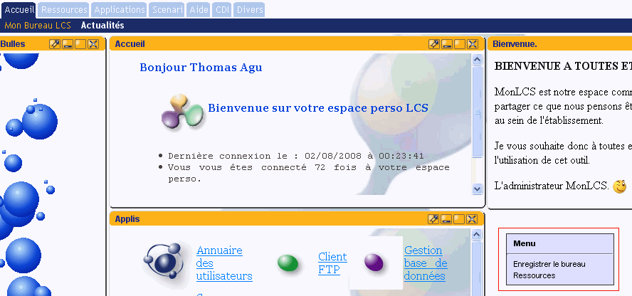
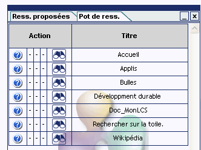
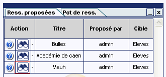
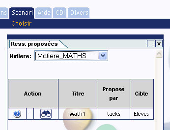
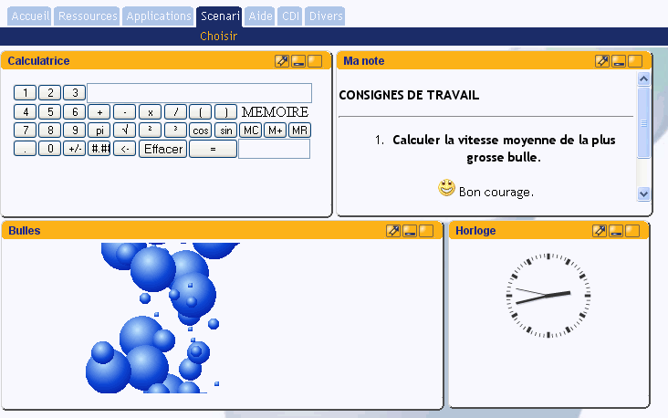

Documentation LCS monlcs
UTILSER Mon LCS.
1° Le profil élève.
a)
Personnaliser son bureau.

A la connexion vous pouvez
hériter d'un bureau prédéfini par le gestionnaire
de MonLCS. Vous pouvez personnaliser cet écran et ajouter des
ressources à cet écran par défaut.
Pour sauvegarder vos modifications: clic-droit commande: Enregistrer le bureau.
Pour ajouter du contenu: clic-droit menu ressources.
ATTENTION SI VOUS VOULEZ
RETROUVER L'ECRAN DEFINI PAR DEFAUT: fermez toutes les
fenêtres puis enregistrez le bureau.
b)
Les ressources publiques.
Ces ressources peuvent être
placées sur le bureau. Vous les retrouverez dans le pot de
ressources. (clic-droit ressources)

Pour ajouter ces ressources
appuyer sur le bouton représentant des jumelles. Une
fenêtre s'ouvre alors à l'écran avec le contenu de
la ressource.
Placer la fenêtre à
l'endroit désiré puis enregistrez le bureau.
c) Les ressources proposées.
Des ressources vous sont
recommandées dans certains menus. Pour les consulter et les
sélectionner, choisir l'onglet ress. proposées du pot de
ressources et placer
la ressource sur votre bureau,
définir sa position et sa taille puis n'oubliez pas
d'enregistrer le bureau.

d)
Les fils RSS.
Les fils RSS (Onglet
Ressources sous menu fil RSS) sont des flux XML qui vous tiennent
informés d'une actualité. Vous pouvez à partir du
pot de ressources sélectionner et paramètrer les fils qui
vous jugez
intéressants. En ce qui concerne la gestion des fils RSS la
procédure est la même que pour les ressources.
e) Les
scénariis pédagogiques.
Les
scénariis pédagogiques sont des ressources liées
ensemble par un professeur en vue d'utilisation dans un cours lors
d'une séquence pédgogique. En tant qu'élève
vous ne pouvez que les
consulter. Pour cela rendez
ous dans l'onglet Scenari, selectionnez la matière puis
réalisez les actions proposées par votre enseignant.

Exemple :
